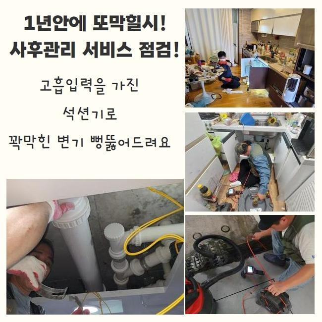
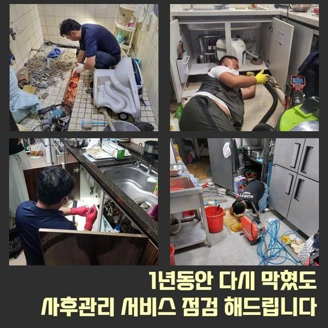
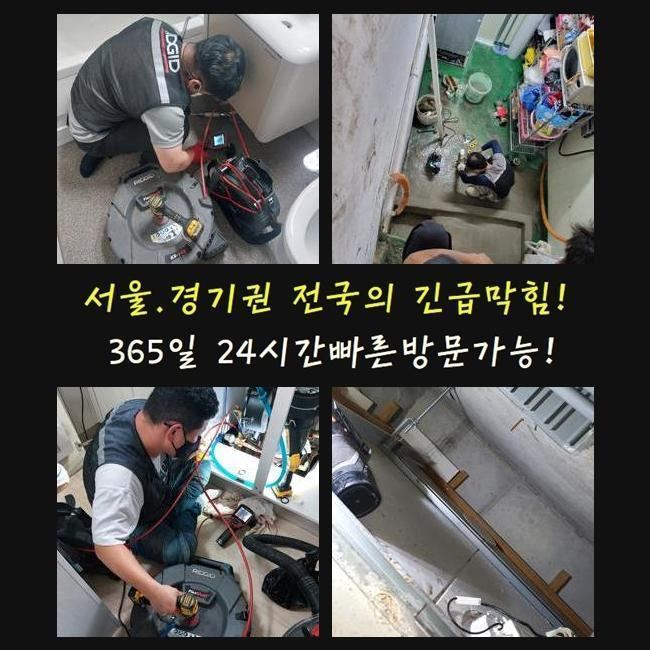
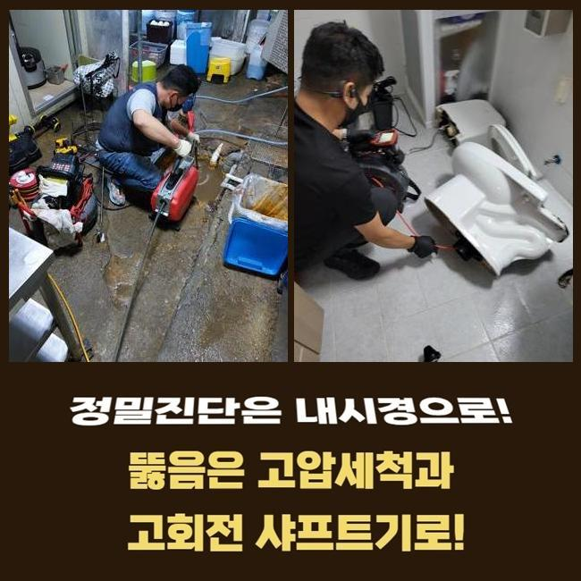
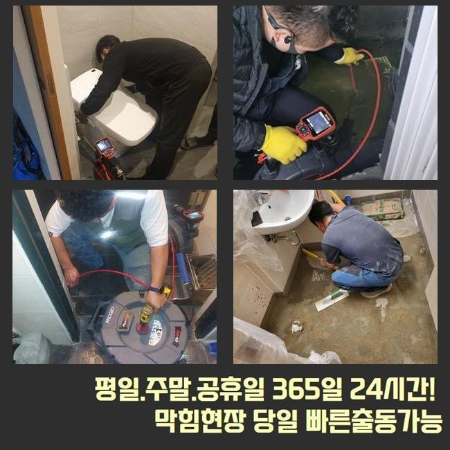
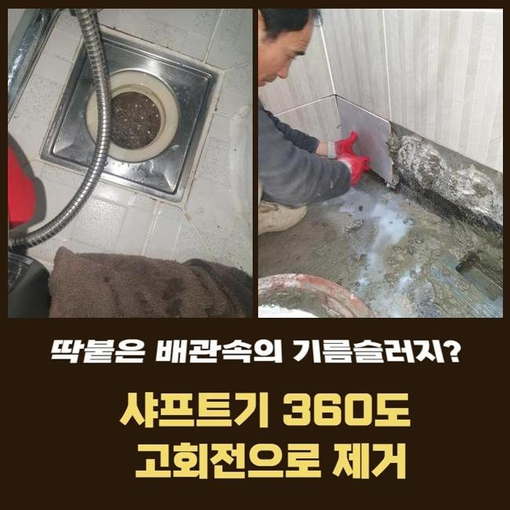

🏠 서대문 영천동세탁실역류 북가좌동 하수구청소장비 누수탐지공사
서울 서대문구 싱크대막힘 전문 시공 후기

📋 작업 개요
- 위치: 서울 서대문구, 서대문구, 서울
- 서비스 유형: 싱크대막힘, 하수구막힘, 배관막힘, 누수수리, 역류해결, 뚫는업체, 배관청소, 고압세척, 설비공사
- 작업 일시: 2025. 3. 11. 9:48
- 업체명: 하수구수사대 (010-5615-2118)
🔍 문제 상황
서대문 북아현동화장실바닥막힘 홍은동 배관내시경카메라 출장수리
욕실이나 주방공간은 우리 일상의 필수인 곳인데요
그러므로 일상중에 갑작스럽게 배수기능에 문제가 생기면 갑갑함은 표현하기 힘들 수준이겠죠
이런 상황임에도 배수기능이 약해지는 것에 대해 크게 신경쓰지 않으시는 고객분들이 많죠
얼마간의 기간이 지나면 사태가 완화되거나 더이상 확대는 안될거라 믿기 때문이랍니다
그렇지만 현실적인 상황은 그런식으로 흘러가지 않아요
이에 초반에 적절하게 처치한다면 골치아픈 사태를 방지할수 있어요
물빠짐이 느리게 된다는건 배수관 안쪽에서 물흐름을 막는 노폐물이 머물러있다는 이야기입니다
찌꺼기가 또 누적되어서 더욱더 고약한 상황으로 발전하기 이전에 전문가를 수소문하여 적합하게 검정을 실시하고 순차적으로 청소해야 돼요
저저번주에 내방드린 지점을 신밀하게 말씀드리고자 하는데요
이같은 문제들로 전문가를 찾으시는 이웃님들께 도움되기를 간절히 원합니다
저희들이 방문드렸던 지점은 꼬마빌딩에 소재한 식당입니다
의뢰자께선 싱크대와 욕실배관까지 전반적으로 하수처리가 안되는 상태라고 이야기하셨어요

🔎 원인 분석
💡 전문가 진단: 정밀 진단 장비를 사용하여 슬러지의 고착 여부를 판명하고 타격/세척 작업을 실시했습니다.
100% 멈춘건 아니었으며 하루지나면 소멸되었기에 다음에 고치자는 생각을 갖고 지속해서 쓰셨다고 합니다
그 상태로 방치하니 이물의 양이 증대되어서 물흐름이 멈춰버렸고 물이 역류되는 사태까지 일어나게 된거죠
배수관의 구조는 난삽하고 비좁은 길목으로 만들어져 있답니다
그러하기에 겉에서 볼땐 이물들이 얼마만큼 상존하는지 알수가 없습니다
따라서 현장으로 넘어갈때는 배관내시경을 필히 갖추어야 한답니다
배관내시경의 끝부분엔 전용카메라가 존재하는데요
그것을 이용해 파악하기 곤란한 파이프 하부까지 선명하게 파악가능하고 잔존물의 종류까지 파악할수 있는거죠
배관내시경으로 확인하였더니 관로 내측은 상당히 지저분했습니다
머리카락 등과 다양한 이물들이 적층을 이루고 있었답니다
이런 오염물질들이 들러붙어 단단해진 상태로 바뀌어 좁다란 배관 길목을 막아서 물흐름이 적절히 안되었답니다
그냥 내버려둔다면 몸집을 더더욱 키워가면서 배관과 일체화될수도 있어요
그리된다면 한층 사태가 악화되는 것이므로 빨리 시공하기로 했어요
이럴 때에 활용하는 기계는 샤프트입니다

🔧 작업 과정
좁디좁은 구멍에도 가볍게 투입가능한 특성이 있어요
노즐의 끝부분에는 체인노커라는 부속이 존재하여 돌면서 파이프내부에 체류중인 딱딱해진 여러 노폐물들을 부스러뜨립니다
전면적으로 분쇄공정을 단행하였는데요
전동장비와 체인노커를 연결한뒤 샤프트장비를 작동하여 벽면에 붙은 찌꺼기들을 소제하기 시작했죠
어느쪽에 슬러지들이 집중되어 있는지 파악해야 하므로 배관카메라 사용도 병행하였습니다
이것을 통하여 적체량이 많은장소를 우선해서 시공해나가면 한층 조속히 끝마칠수 있어요
하수관의 내측이 손상되는일이 없게끔 신중한 자세로 잔재들만을 명확하게 겨냥하여 세척하였답니다
만약 작업중에 배수관에 압력을 준다면 파열이 일어나서 누설증세가 발생할수도 있죠
그러므로 배관카메라나 분쇄기기가 구비되는 것이 중요하겠으나 전문가의 테크닉 역시 필수적으로 따져봐야하는 부분이겠죠
이물들이 누적된 구간을 깔끔하게 분쇄하고난 뒤에 미미한 물질이라도 남아있지 않게 제거해주었어요
그후 즉시 배수테스트를 진행했죠
다량의 폐수를 일거에 배수공으로 흘려보냈고 흐름이 지체되거나 역류현상은 없는지를 진단했답니다
별다른 특이사항은 없었으므로 즉시 다른 위치로 이동하게 되었죠
이쯤해서 마무리 짓는다면 즉시 쓰시기엔 괜찮겠지만 추후에 막힘현상이 나타날 확률이 있어서였답니다
욕실내의 개별배관과 직결된 횡주관로도 분석하여 정체의 근본 동기를 파악해나가기로 합니다
욕실배수관이 정체된다면 관계된 메인관로에까지 슬러지가 적체되었을 여지가 높으므로 전면적 관로청소를 진행하는게 바람직하죠
그러하기에 횡주배관으로 간뒤 관측을 시작하였고 저희들의 예측대로 견고하게 굳은 이물질들을 목도할수 있었죠
횡주관과 관련된 개별배수관까지 전반적으로 샤프트기기를 통해 청소했고 잔재들이 떨어져나간 말끔해진 하수관을 목도할수 있었죠
물티슈를 비롯한 용해되기 어려운 것들은 일상중에 다시 쌓일 수 있어요
그렇기에 정기적으로 배관업체를 불러서 정비하시는게 좋다고 말씀드렸어요
그리고 오래도록 관로를 보존하는 대책들도 저희들의 지식선에서 차근차근 알려드렸어요


✅ 작업 완료
배수관이 막혀버리면 다양한 어려움을 겪게 되므로 애초에 그러한 일이 안나타나게 사전적 보존업무를 하는게 좋답니다
휴일에도 요청시 방문드린다는 사항도 말씀드렸답니다
20년 이상된 거주지에선 누설도 종종 발발하기에 이에 대한 수선의뢰도 많은 편이죠
이에 즉각 뚫음뿐만 아니라 누수공사도 한다는 사실을 설명드렸답니다
어떤구간에서 막힘이 생겨났고 언제 시작되었는지 사전에 알려주신다면 더 빠르게 상담해드릴 수 있습니다
또한 예약시간에 맞춰 배관전문가가 전용장비를 갖추고 빠르게 내방해드릴 것이니 필요시 연락주시길 바라요




⚠️ 베란다 누수 및 방수 관리 방법
- ✅ 비가 많이 올 때 창틀 주변이나 아래층 천장에 얼룩이 생기는지 정기적으로 확인해 보세요.
- ✅ 우수관 주변 실리콘 마감이 들뜨거나 깨진 틈새가 있는지 손상 여부를 수시로 체크하세요.
- ✅ 베란다 바닥 타일의 줄눈(메지)이 소실되면 그 틈으로 물이 침투하여 누수가 유발됩니다.
- ✅ 누수 의심 증상 발견 시 방치하면 아래층 손실이 커지므로 즉시 전문가의 진단을 받으십시오.
💡 핵심 정리
- 확실한 장비 작업(내시경 점검 및 샤프트 스케일링)으로 원인을 뿌리 뽑습니다.
- 작업 후 1년 이내에 동일한 부위 재발 시 100% 무상 A/S 서비스를 보장합니다.
- 서울 · 경기 · 인천 전 지역에 24시간 언제든 긴급 출동할 수 있도록 항시 대기 중입니다.
❓ 자주 묻는 질문 (FAQ)
🚨 서울 서대문구 싱크대막힘 문제로 고민이신가요?
정확한 원인 진단과 확실한 시공으로 재발 없는 해결을 약속드립니다.
24시간 긴급 출동 | 서울 · 경기 · 인천 전지역 | 1년 내 재발 시 무상 A/S